ANTI-V: REBOOT · GAME PM
좋아하는 마음을
게임으로 완성했습니다.
퍼즐 액션 게임의 기획 구조와 사업 방향을 총괄하고, 개발 일정과 전시 준비, 외부 커뮤니케이션을 연결했습니다.
- ROLE
- PM / 사업 총괄
- TEAM
- 데프캣 스튜디오
- PLATFORM
- PC · STOVE
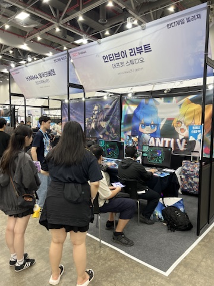

PORTFOLIO · 2024—2026
장은태 · Chang Eun Tae
게임 개발, 전시, 브랜드 경험과 커뮤니티를 연결하는 Game PM입니다.
00 / About
게임을 만드는 일은 화면 안의 규칙을 설계하는 데서 끝나지 않습니다.
아직 알려지지 않은 게임을 찾고, 그 게임을 만날 새로운 관객과 장소를 만듭니다. 개발과 사업, 전시와 커뮤니티 사이를 오가며 하나의 아이디어가 실제 플레이 경험이 되도록 연결합니다.
그 과정에서 저는 네 가지 질문을 반복합니다. 무엇을 만들 것인가, 누구와 만날 것인가, 기능을 어떻게 경험으로 바꿀 것인가, 그리고 그 경험을 어떻게 공동체로 이어갈 것인가.
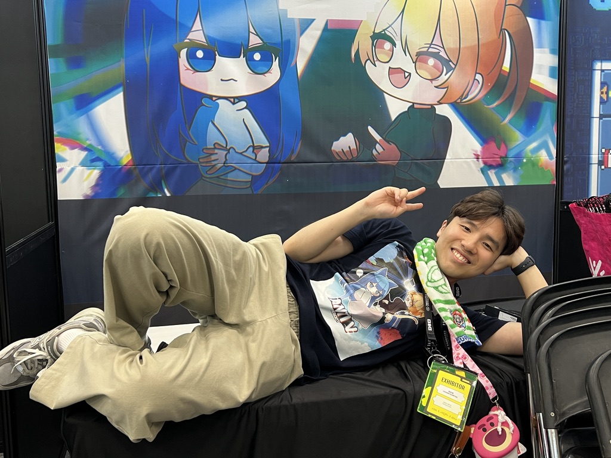
프로젝트를 선택하면 연결된 역할, 기관, 성과와 보도를 확인할 수 있습니다.
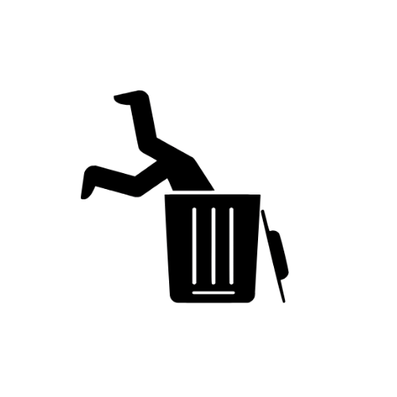
장은태 GAME DIGGER 22ANTI-V: REBOOT · GAME PM
퍼즐 액션 게임의 기획 구조와 사업 방향을 총괄하고, 개발 일정과 전시 준비, 외부 커뮤니케이션을 연결했습니다.

SEOUL GAME TOWN 1·2 · EXHIBITION
심사와 장르의 경계 없이 창작자가 관객을 만날 수 있도록 두 차례의 인디게임 전시를 공동 기획하고 운영했습니다.
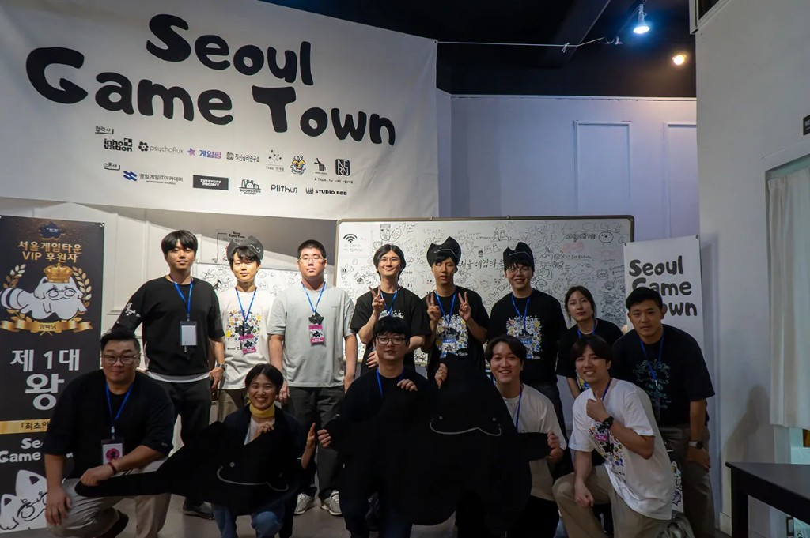
8.4M KRW+
9.7M KRW+
KRW FUNDING
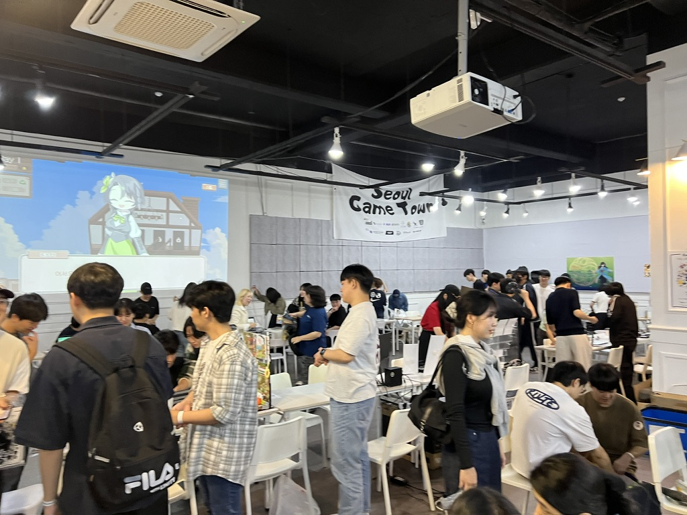
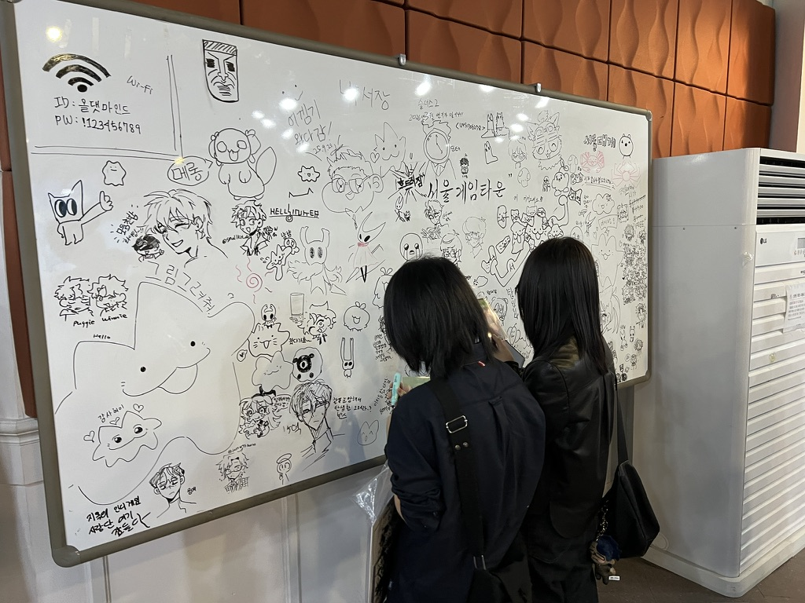
GAME AICON SEOUL · ORGANIZER
글로벌 퍼블리셔, 개발사, 투자자와 인디 스튜디오가 만나는 B2B 행사에서 프로그램과 현장 운영을 담당했습니다.
GAME AiCON 공식 사이트 ↗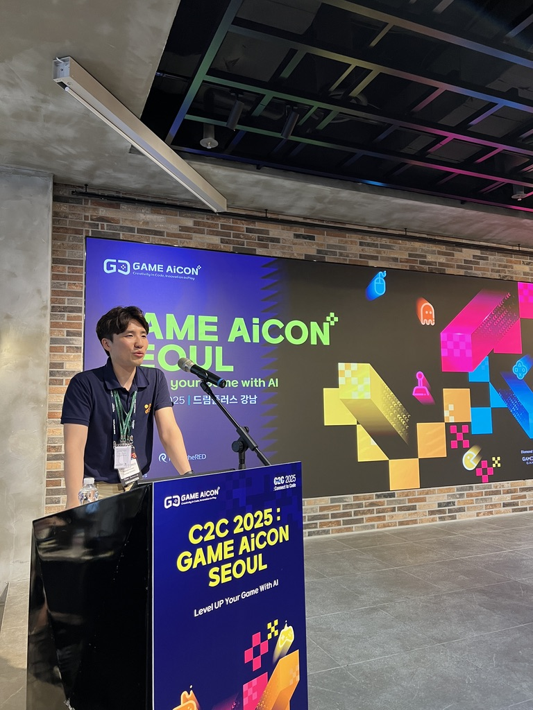
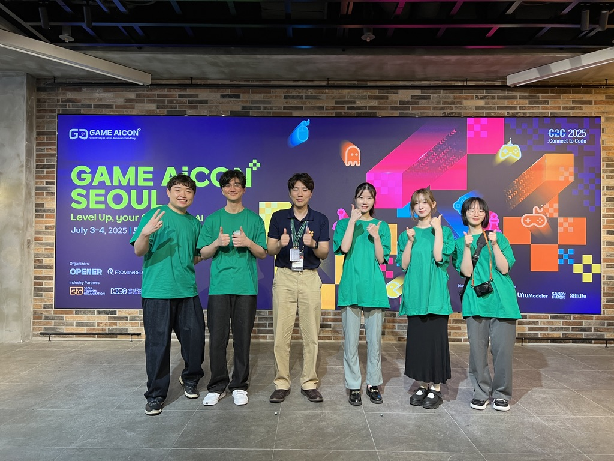
LOGITECH × UNITE SEOUL
MX Master 4의 Actions Ring을 자연스럽게 경험할 수 있도록 짧은 체험 게임을 기획·개발하고, UNITE Seoul 부스 현장을 운영했습니다.
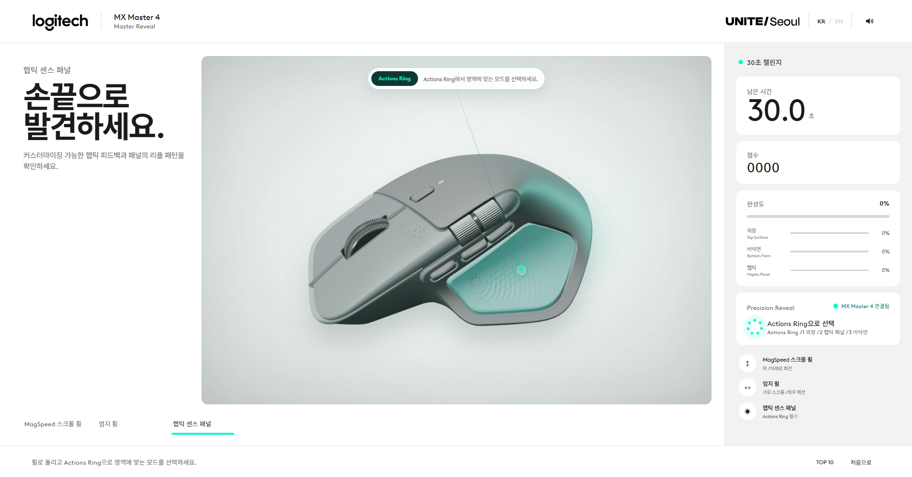
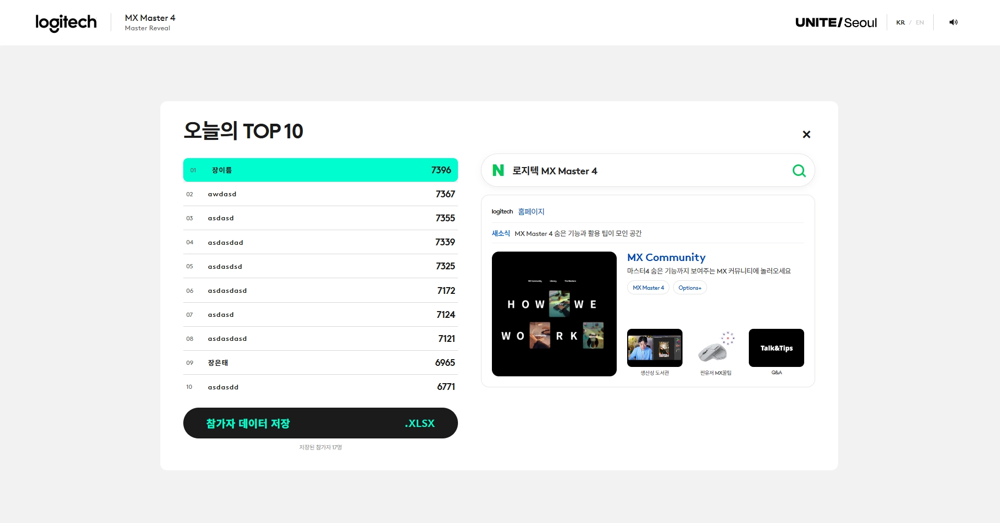
GAME HUDDLERS · COMMUNITY
게임 개발자를 위한 Discord 커뮤니티를 운영하고, 유타대학교와 협업해 연 3회 오프라인 행사를 진행합니다.
MMCA · CUSTOMER ADVISORY PANEL 13TH
국립현대미술관 제13기 고객자문단으로서 전시 관람 동선, 대기, 안내와 접점 경험을 모니터링하고 개선 의견을 제안했습니다.
국립현대미술관 ↗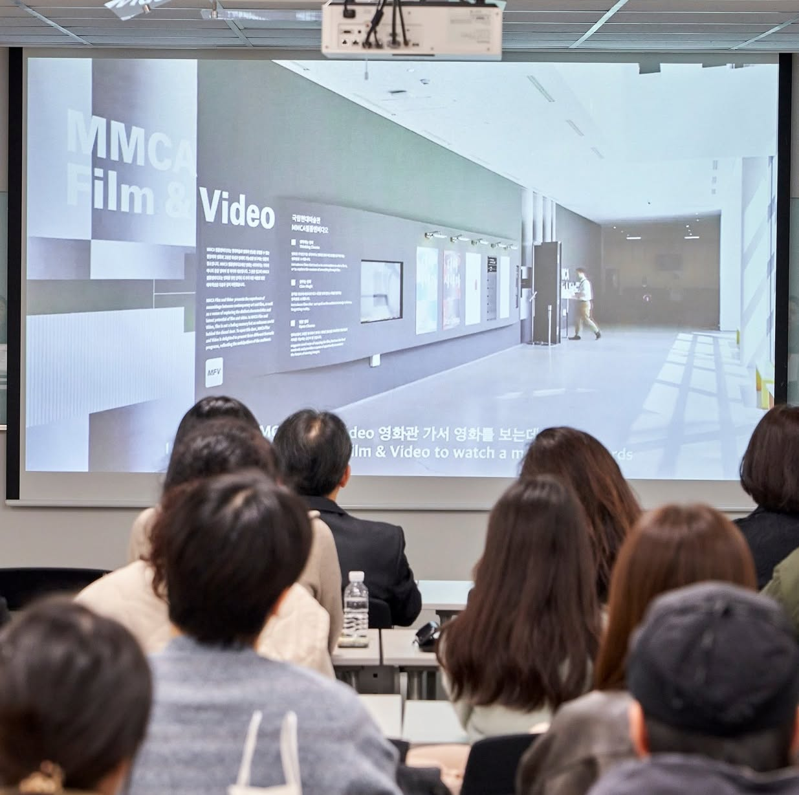
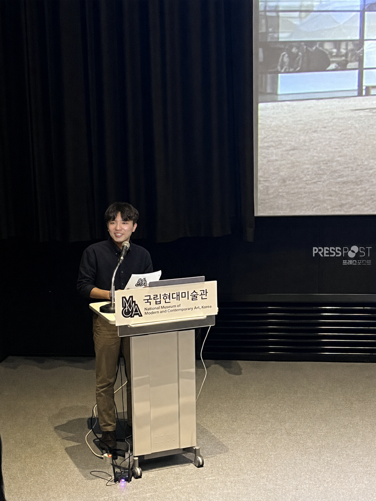
게임, 전시, 커뮤니티 운영을 가로지르는 활동 기록입니다.
주요 프로젝트와 활동을 다룬 국내외 언론 보도입니다.
CONTACT
Let’s Make the Next Playground.